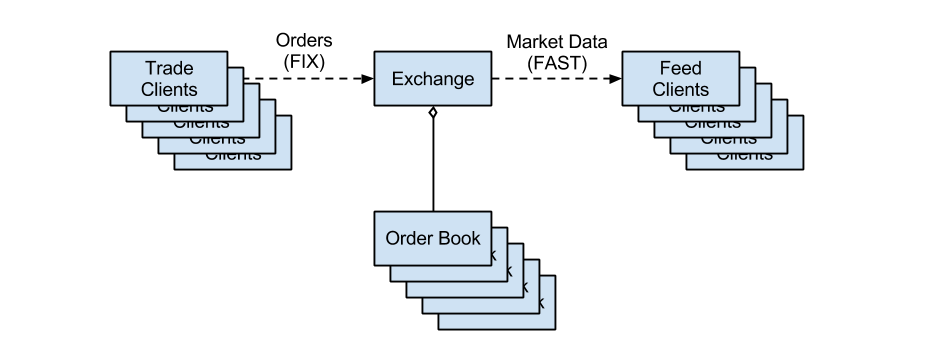
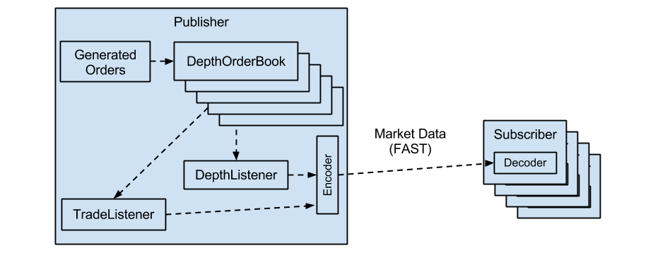

|
 |
The financial industry relies heavily on systems to disseminate and interpret market data. Both trading decisions and analytics are based on the current state of the market for a particular security. A typical trading exchange involves multiple partries, and in a conceptual view looks like this:
Building such an exchange is a complex undertaking, involving order taking, matching, compression, dissemination, decompression, and interpretation. This paper will demonstrate how to build such a system using only open-source components, including Liquibook for limit order book matching, QuickFAST for compression and decompression, and Boost ASIO for distribution.
Liquibook is a C++ open source limit order book matching engine. It is a component library that you can integrate into your project for implementing matching algorithms. Liquibook includes compoenents for an order book, aggregate depth tracking, BBO tracking, and a trade feed.
The FAST protocol is a compression and encoding mechanism for streaming data. QuickFAST is an impelementation of the FAST protocol in C++ for encoding and decoding message streams using the FAST protocol.
Boost ASIO is a cross-platform C++ library for asynchronous network programming.
The example project for this paper will take on a more advanced use case - simulating an exchange producing a 5-level depth feed, aggregated by price, and a trade feed.
This example involves a number of steps:
The example exchange generates orders, simulating the receipt of orders from traders. A true exchange takes orders from traders by means of an API - often via the FIX protocol. For the purposes of this paper, internally generated orders will suffice.
The example exchange must be ready to match unfilled orders against inbound orders. This is done by means of a limit order book. The limit order book keeps these orders sorted so that when multiple existing orders can match a new inbound order, the matching is performed in a sequence determined by established exchange rules. The example exchange uses Liquibook's OrderBook class to maintain the limit order book.
The example exchange must match new inbound orders against those in the limit order book. The exchange must detect a match, and fill the appropriate orders. Liquibook's OrderBook class naturally includes matching capability.
A real exchange must always notify traders of changes in their order status. This includes accepting, filling, and rejecting, orders, but also accepting or rejecting an order cancellation or replacement requests. In the example exchange, this will be skipped because there are no trading clients - the orders are randomly generated. Liquibook does, however, provide an interface and make callbacks for changes in order status, which can easily be turned into notifications sent to trading clients.
While a full order book feed is useful, some markets choose to send aggregated forms of data instead, known as depth. Rather than representing individual orders, the depth models price levels as a whole. The market will also limit the number of levels distributed - top 5 and top 10 are common limits.
The example exchange goes through the extra step and complexity of building 5-level depth. Liquibook provides the DepthOrderBook class, which manages the order book and depth, and the DepthListener class for being notified of changes to the top few depth levels.
It is not enough to maintain the depth. In order to produce an incremental feed, the example exchange must also be able to determine which levels of the depth have changed. A change can happen to one or more levels in the depth, on both the buy and sell sides, in response to a single order event. Liquibook has an interface for interrogating the various levels of depth and finding out if it has changed since the last published change. This makes it trival to build an incremental feed - sending only changed levels to feed clients.
In order to effectively trade, feed clients have a need to understand order flow in the exchange. Feeds in which clients are norified of all possible order detail are known as "quote" feeds or "full order book" feeds. The example exchange, however, summarizes the order book using dept. It notifies feed clients of trades and changes in the depth. Liquibook supports building a trade feed through the TradeListener inteface, and a depth feed through the DepthListener class. It also supports building a full order book feed, through the OrderListener class.
The example exchange then compresses the trade and depth messages using QuickFAST and sends them to clients using Boost ASIO.
Finally, the example includes feed clients that connect to the feed, and decodes the updates (in the FAST protocol), and recreates the trade events and the market depth. The clients use QuickFAST for decoding, and Boost ASIO to handle network I/O.
If you intend to build this project, you will need to download and build:
The project is found in total within the directory
examples/depth_feed_publisher of Liquibook.
The example exchange consists of two applications, a publisher and a subscriber. The figure below illustrates the flow of data in the example exchange.
The publisher acts as the exchange in the example project. The publisher is therefore responsible for maintaining the various order books (one per security), building the feed messages, and publishing the messages, in a FAST-encoded format.
The publisher also simulates the trading clients, generating random orders inside the process, and adding them to the appropriate order book.
Finally, the publisher will listen for network connections from one or more subscribers.
Liquibook requires that the application define an order class to represent
an order to match. Liquibook requires that it meet the interface defined
in the class src/book/order.h, which includes the conversion
of the order's price to integer format.
namespace liquibook { namespace book {
class Order {
public:
/// @brief is this a limit order?
bool is_limit() const;
/// @brief is this order a buy?
virtual bool is_buy() const = 0;
/// @brief get the price of this order, or 0 if a market order
virtual Price price() const = 0;
/// @brief get the quantity of this order
virtual Quantity order_qty() const = 0;
};
} }
There is also one or more subscribers, who are responsible for decoding the FAST messages and displaying the results in the console. The publisher listens for connections, and the subscribers connect to the publisher.
Liquibook accepts pointers to orders in the API for order books, and provides those pointers back in callbacks. A client program can extend the order interface to add whatever additional information is needed in the callbacks. The order class for the example exchange looks like this:
namespace liquibook { namespace examples {
class Order : public book::Order {
public:
Order(bool buy,
const double& price,
book::Quantity qty);
virtual bool is_buy() const;
virtual book::Price price() const;
virtual book::Quantity order_qty() const;
private:
bool is_buy_;
double price_;
book::Quantity qty_;
static const uint8_t precision_;
};
} }
The example exchange's order class inherits from book::Order
and implements its 3 pure virtual functions. Inheriting from the
book::Order class is not strictly necessary as the rest of
Liquibook uses templates to bind to a specific order class. The trivial
implementation of this class is omitted from this paper.
Liquibook comes with an order book class - two actually:
book::OrderBook for managing an order book only, and a derived
class book::DepthOrderBook for adding depth aggregation to that
order book. Since this example builds a depth feed, it uses
book::DepthOrderBook. The important parts of the
book::OrderBook class are:
namespace liquibook { namespace book {
template <class OrderPtr = Order*>
class OrderBook {
public:
typedef OrderBook<OrderPtr > MyClass;
typedef TradeListener<MyClass > TypedTradeListener;
/// @brief set the trade listener
void set_trade_listener(TypedTradeListener* listener);
/// @brief add an order to book
/// @param order the order to add
/// @param conditions special conditions on the order
/// @return true if the add resulted in a fill
virtual bool add(const OrderPtr& order, OrderConditions conditions = 0);
/// @brief perform all callbacks in the queue
virtual void perform_callbacks();
};
} }
Note that the book::OrderBook class is a template class, allowing
the user to define not only the order class used in the order book, but the
style of pointer used. This can be a regular pointer or a smart pointer. The example exchange uses a boost::shared_ptr.
The first method of interest allows a setting of a listener for trades. This
listener, shown later, gets notified when a trade occurs. The example
exchange needs this notification to build a trade feed, and thus sets the
trade listener. The book::OrderBook class also includes
listeners for all order status updates, for providing updates back to the
trade clients, and a listener for all changes to the order book, to build a
full order book feeed.
Next is a method to add an order to the order book. add()
accepts an order pointer, and condition flags for special conditions, like
an immediate or cancel order. Note that there are also methods (not used in
the example exchange) to cancel an order and to replace an order.
Finally, there is a method to perform the callbacks on the order book. The
client code is responsible for calling this method. In that way, it can
decide whether it is done in the calling thread, or in a background thread.
By default, this method calls perform_callback() for each
callback in the queue. Naturally, perform_callback() can be
overridden. The default implementation of this method issues callbacks for
to the trade listener, order listener, and order book listener, if present.
The book::DepthOrderBook class is simpiler:
namespace liquibook { namespace book {
/// @brief Implementation of order book child class, that incorporates
/// aggregate depth tracking. Overrides perform_callback() method to
// track depth aggregated by price.
template
class DepthOrderBook : public OrderBook {
public:
typedef Depth DepthTracker;
typedef BboListenerTypedBboListener;
typedef DepthListenerTypedDepthListener;
typedef Callback DobCallback;
/// @brief construct
DepthOrderBook();
/// @brief set the BBO listener
void set_bbo_listener(TypedBboListener* bbo_listener);
/// @brief set the depth listener
void set_depth_listener(TypedDepthListener* depth_listener);
/// @brief handle a single callback
virtual void perform_callback(DobCallback& cb);
// @brief access the depth tracker
DepthTracker& depth();
// @brief access the depth tracker
const DepthTracker& depth() const;
private:
DepthTracker depth_;
TypedBboListener* bbo_listener_;
TypedDepthListener* depth_listener_;
};
book::DepthOrderBook overrides perform_callback()
to update the depth, which is accessible through the depth()
methods.
In addition, book::DepthOrderBook adds two new listeners -
a BBO listener, for tracking only changes to the best bid and best offer, and
a depth listener, for tracking all depth changes.
To build the example exchange, a book::DepthOrderBook must be
used, and it must have a trade listener and a depth listener set. In these
listener's callbacks, the feed clients must be updated with trade and depth
update messages.
In some of these callbacks, a pointer to the order book is provided. This gives the client code the opportunity to derive from one of the order book classes, and add custom fields. The example exchange takes advantage of this, providing access to the symbol of the order book's security:
namespace liquibook { namespace examples {
typedef boost::shared_ptr OrderPtr;
class ExampleOrderBook : public book::DepthOrderBook {
public:
ExampleOrderBook(const std::string& symbol);
const std::string& symbol() const;
private:
std::string symbol_;
};
} } // End namespace
The examples::ExampleOrderBook class manages the order book and
depth for a single security. Somewhere the example exchange needs to create
an order book for each security, and maintain a mapping from symbol to its
order book. This is done in the examples::Exchange class:
namespace liquibook { namespace examples {
class Exchange {
public:
Exchange(ExampleOrderBook::TypedDepthListener* depth_listener,
ExampleOrderBook::TypedTradeListener* trade_listener);
void add_order_book(const std::string& symbol);
void add_order(const std::string& symbol, OrderPtr& order);
private:
typedef std::map<std::string, ExampleOrderBook> OrderBookMap;
OrderBookMap order_books_;
ExampleOrderBook::TypedDepthListener* depth_listener_;
ExampleOrderBook::TypedTradeListener* trade_listener_;
};
} }
The implementation of the examples::Exchange class is trivial.
The constructor saves off the provided listeners, in order to add them to
future order books:
namespace liquibook { namespace examples {
Exchange::Exchange(ExampleOrderBook::TypedDepthListener* depth_listener,
ExampleOrderBook::TypedTradeListener* trade_listener)
: depth_listener_(depth_listener),
trade_listener_(trade_listener)
{
}
The add_order_book() method creates a new order book, sets the
listeners on the order book, and adds a mapping from the given symbol to the
order book:
void
Exchange::add_order_book(const std::string& sym)
{
std::pair result;
result = order_books_.insert(std::make_pair(sym, ExampleOrderBook(sym)));
result.first->second.set_depth_listener(depth_listener_);
result.first->second.set_trade_listener(trade_listener_);
}
Finally, the add_order() method finds the correct order book,
adds the order to the orer book, and then calls triggers callbacks by calling
the perform_callbacks() method.
void
Exchange::add_order(const std::string& symbol, OrderPtr& order)
{
OrderBookMap::iterator order_book = order_books_.find(symbol);
if (order_book != order_books_.end()) {
order_book->second.add(order);
order_book->second.perform_callbacks();
}
}
} } // End namespace
The exchange is initialized in the file publisher_main.cpp.
The main() function starts by establishing the securities to
"trade" in our exchange - in this case the NASDAQ 100 - taken from a snapshot
in April 2013. main() records the symbol and a base price in
a structure:
struct SecurityInfo {
std::string symbol;
double ref_price;
SecurityInfo(const char* sym, double price)
: symbol(sym),
ref_price(price)
{
}
};
The base price serves as a basis for generating random prices for the
example exchange. main() keeps this security information in a
vector and populates it in a method, called create_securities():
int main(int argc, const char* argv[])
{
SecurityVector securities;
// Create securities
create_securities(securities);
The body of create_securities() is not shown here, but it adds
each of the one hundred constituents of the NASDAQ-100 to the vector. These
are later added to the exchange, and also referenced while generating random
orders.
An exchange must accept connections from feed clients in order to
disseminate market data to them. The example exchange does this through a
class called DepthFeedConnection:
// Feed connection examples::DepthFeedConnection connection(argc, argv); // Open connection in background thread connection.accept(); boost::functionacceptor( boost::bind(&examples::DepthFeedConnection::run, &connection)); boost::thread acceptor_thread(acceptor);
The example exchange creates an instance of DepthFeedConnection,
passing in the command-line arguments to configure it. The command line
arguments it looks for a -t to define the location of the template file, -h
to set the host to connect to, and -p to set the connection port.
The e
To transmit messages using the FAST protocol, one must first decide on the messages to transmit on the feed. This exchange will produce a trade feed and an incremental depth feed. The trade messages include:
QuickFAST uses XML files, called templates to describe the messages in the
feed protocol. The example's templates can be found in the file
examples/depth_feed_publisher/depth.xml. The trade message
template looks like this:
<template name="Trade" id="1">
<uInt16 name="MessageType" id="100">
<constant value="22"/>
</uInt16>
<uInt32 name="SequenceNumber" id="200">
<increment/>
</uInt32>
<uInt32 name="Timestamp" id="300">
<copy/>
</uInt32>
<string name="Symbol" id="400">
<copy/>
</string>
<uInt32 name="Quantity" id="604">
<copy/>
</uInt32>
<uInt32 name="Cost" id="603">
<copy/>
</uInt32>
</template>
Note that the tag names within the template tag indicate the type
of the field. The reader may be surprised to see a currency field (Cost)
represented as an integer (uint32). This, however is consistent with
Liquibook's internal storage of prices as as integer. Using this scheme,
prices are converted to integer, by shifting the decimal point, so that no
floating point comparisons need be done in the order book. This protocol
carries this design decision forward to the feed protocol, requiring the
clients to convert these prices back to their decimal format.
The depth update template is more complicated:
<template name="Depth" id="2">
<uInt16 name="MessageType" id="100">
<constant value="11"/>
</uInt16>
<uInt32 name="SequenceNumber" id="200">
<increment/>
</uInt32>
<uInt32 name="Timestamp" id="300">
<copy/>
</uInt32>
<string name="Symbol" id="400">
<copy/>
</string>
<sequence name="Bids" id="500">
<uInt8 name="LevelNum" id="501">
<copy/>
</uInt8>
<uInt32 name="OrderCount" id="502">
<copy/>
</uInt32>
<uInt32 name="Price" id="503">
<copy/>
</uInt32>
<uInt32 name="AggregateQty" id="504">
<copy/>
</uInt32>
</sequence>
<sequence name="Asks" id="600">
<uInt8 name="LevelNum" id="601">
<copy/>
</uInt8>
<uInt32 name="OrderCount" id="602">
<copy/>
</uInt32>
<uInt32 name="Price" id="603">
<copy/>
</uInt32>
<uInt32 name="AggregateQty" id="604">
<copy/>
</uInt32>
</sequence>
</template>
The depth message begins with the same 4 fields as the trade message: message type, sequence number, timestamp, and symbol. The depth message also includes two sequences, or variable-length lists. These sequences represent the changed bid and ask levels of the depth for the message security. The sequences themselves contain a set of fields, although in this case both sequences are of the same type.
The changed depth level begins with a level number, indicating which level has changed. If the exchange were to produce all depth levels on every change, this would not be necessary. Since the sequence element could represent any of the 5 levels in an incremental feed, it is required.
Order count indicates the number of orders which were aggregated at this level. If the order count is 0, it indicates a deleted level.
Price is the price common to all the aggregated orders at this level. As in the trade message, it is represented by an integer.
Finally, aggregate quantity shows the sum of all the order quantities at this level.
Here is an example of using some code in a sentence. When using the
String class, be sure to use equals()
instead of = when comparing two strings.
See October 2012 SETT article for an example of displaying code. This method displays line numbers and handles multiple languages.
Make sure to put all referenced files used by the article in a folder called settMmmYyyy_files where Mmm is the article month and Yyyy is the article year. For example, settOct2012_files.
Also, make sure your article contains standard ascii characters. Use ", ', - instead of forward/backward quotes or ticks. Microsoft word replaces these characters by default. Please ensure your article encode these characters properly.
| Bad Example | Good Example |
|---|---|
| “example quotes” | “example quotes” |
| ‘another example’ | ‘another example’ |
| hyphens – anyone? | hyphens — anyone? |
| dot dot dot | dot dot dot … |
If you need to use these, be sure to use the appropriate unicode escape sequence.
Here is how to include blocks of code in the article using the <pre> tag and syntax highlighter:
import java.io.*;
public class Foobar extends Whatever {
public static void main(String[] args) {
// 4-space indent according to JavaSoft conventions
}
}
Now describe the code.
Wrap things up.
Tip: avoid for indentation. When specific indentation is required (usually for code examples), use a <pre> block instead.
Providing references is a good idea. Be sure to spell out the URLs, including the protocol, so people can print the article and see the addresses.